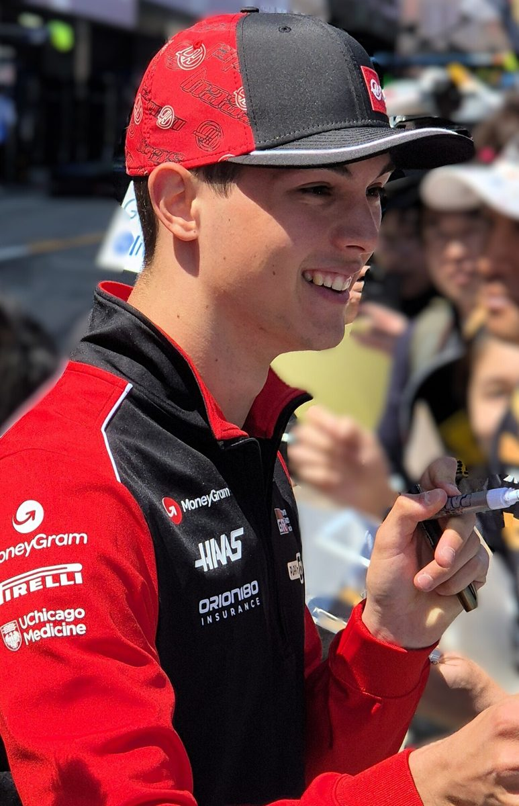

Сенсация в отборе на ЧМ: Саудовская Аравия обыграла Китай 82:80 впервые за 33 года
16,7% из-за дуги и удаление Чжоу Ци отбросили сборную Китая на баланс 5-4 в группе F

«Дортмунд» оторвался от «Баварии» на два очка на фоне травмы Кейна
Непобедимая команда Нико Ковача возглавляет таблицу после десяти туров, пока «Бавария» Венсана Компани потерпела первое поражение в сезоне от «Лилля» без Харри Кейна.

Марк Маркес объявил о завершении карьеры спустя считанные дни после повторения рекорда Агостини
33-летний испанец проведет свой последний заезд на Гран-при Валенсии в эти выходные, сравнявшись по числу чемпионств в «королевском» классе с Джакомо Агостини.

«Свайриенг» шокирует «Матиду», «Краун» спотыкается в Кучинге: итоги 5-го тура Лиги чемпионов АФК 2
«Свайриенг» дома сенсационно обыграл японскую «Матиду Зельвию» 2:0, «Пномпень Краун» уступил в Малайзии 0:3, но оба камбоджийских клуба сохраняют контроль над судьбой путевок в плей-офф

Италия обыграла Южную Корею 2:1 и вышла в полуфинал Кубка Дэвиса
Маттео Берреттини и Андреа Вавассори выиграли решающую пару после победы 139-й ракетки мира Квон Сун Ву над Флавио Коболли.
Главное

От бумажной салфетки до 47 трофеев: жизнь и наследие Лионеля Месси
Преодолев дефицит гормона роста в Росарио, аргентинский гений построил самую титулованную карьеру в истории мирового футбола — от Каталонии до Парижа и Майами.

Даниэль Дюбуа проведет защиту титула WBO в супертяжелом весе против Джозефа Паркера в Манчестере
Битва супертяжеловесов на арене Co-op Live 30 января 2027 года закроет старый счет после сорвавшегося поединка 2025 года.

Дебют Ботрайта и возвращение Сотто: «Гилас Пилипинас» усиливает переднюю линию перед окном FIBA
Тим Коун выставит мощный высокорослый фронткорт в Малайзии, где Филиппинам жизненно необходимы победы над Сирией и Ираном.

В этот день в 1917 году: как война владельцев клубов породила НХЛ
Устав от выходок владельца «Торонто Блюширтс» Эдди Ливингстона, боссы НХА собрались в монреальском отеле «Виндзор» и основали турнир-бунтарь.

Оливер Берман продлил контракт с «Хаасом» на сезон-2027
21-летний британец закрыл последнюю вакансию на стартовой решетке Формулы-1 перед Гран-при Катара после затянувшихся переговоров.

Янник Синнер пропустит Australian Open-2027 из-за операции на правом колене
Федерация тенниса Австралии подтвердила, что двукратный чемпион Мельбурна не сыграет на январском «мейджоре» ради восстановления.
ФутболЕщё →

БаскетболЕщё →
Сенсация в отборе на ЧМ: Саудовская Аравия обыграла Китай 82:80 впервые за 33 года
Дебют Ботрайта и возвращение Сотто: «Гилас Пилипинас» усиливает переднюю линию перед окном FIBA

41 очко Тейтума помогли «Бостону» одолеть «Вашингтон» 131:116 и прервать серию из четырех поражений
ТеннисЕщё →

ЕдиноборстваЕщё →


АвтоспортЕщё →

Олимпийские видыЕщё →

Тянь Бинъи назначен главным тренером сборной Китая по бадминтону на цикл Лос-Анджелес-2028

Камила Валиева не выступит на чемпионате России в Челябинске из-за ограничений по здоровью

«Победы любят тишину»: Трефилов осадил Шишкарёва за обещание медалей Олимпиады-2028
ХоккейЕщё →


Истории
От бумажной салфетки до 47 трофеев: жизнь и наследие Лионеля Месси
Преодолев дефицит гормона роста в Росарио, аргентинский гений построил самую титулованную карьеру в истории мирового футбола — от Каталонии до Парижа и Майами.
В этот день в 1917 году: как война владельцев клубов породила НХЛ
Устав от выходок владельца «Торонто Блюширтс» Эдди Ливингстона, боссы НХА собрались в монреальском отеле «Виндзор» и основали турнир-бунтарь.